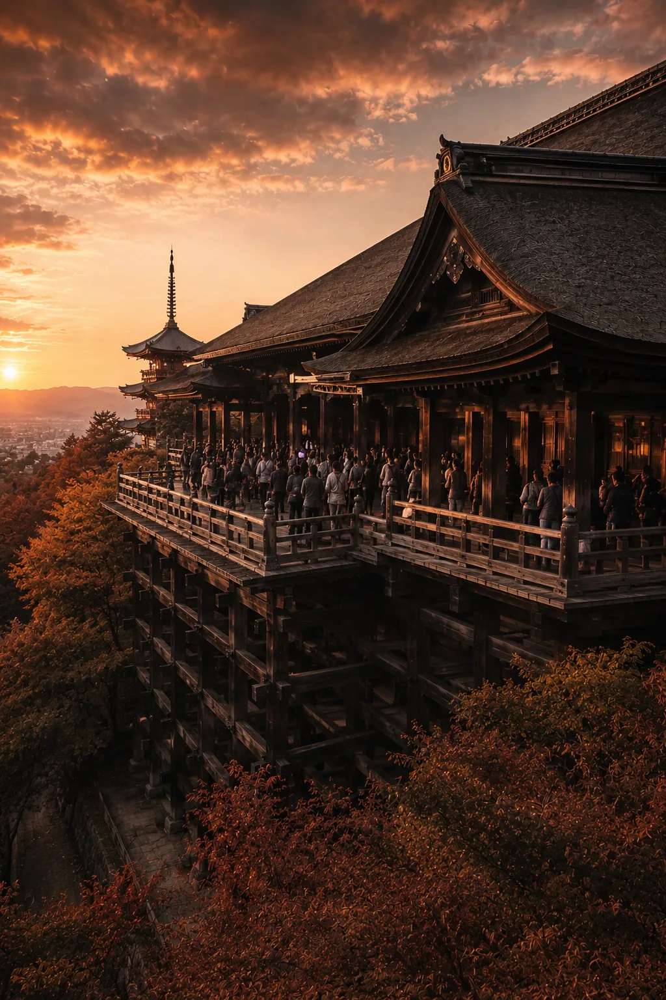
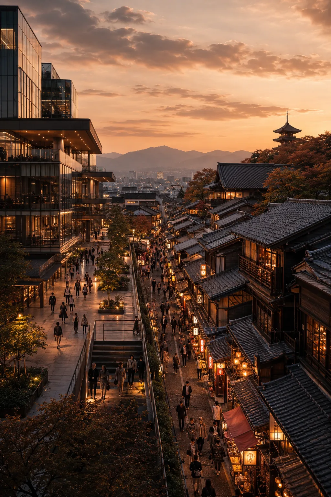
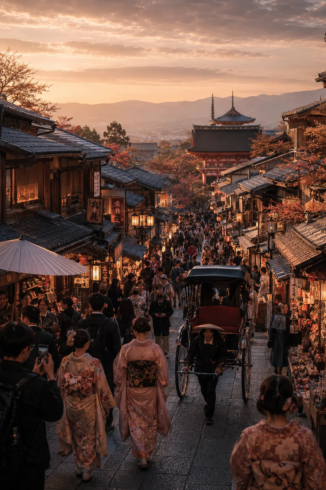
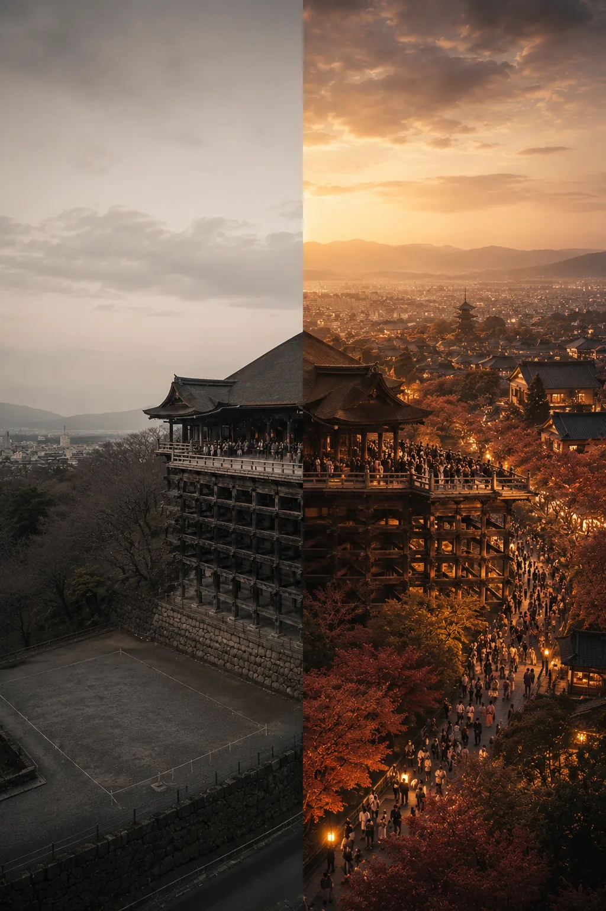
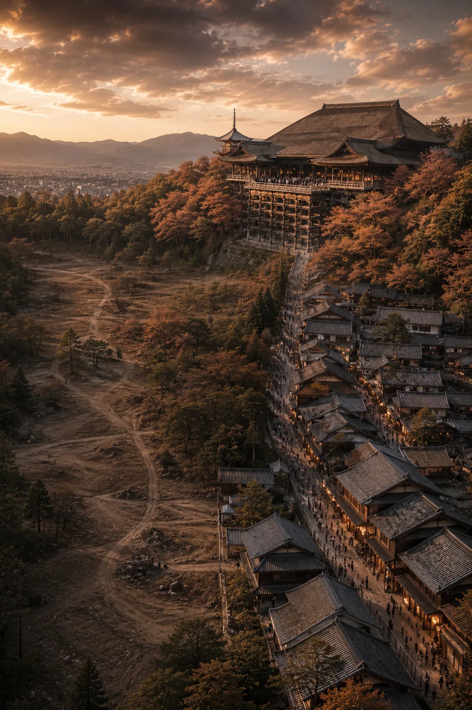
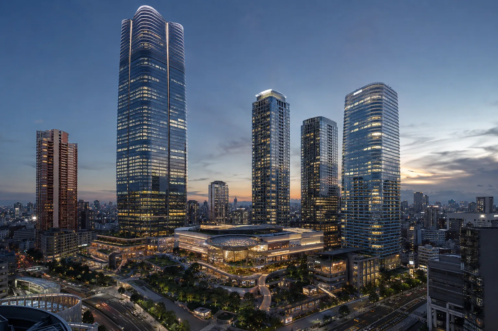

在我看来，清水寺这座建筑真正了不起的地方，既不是舞台的高度，也不是不用一根钉子的构法。它创建于公元778年，如今的伽蓝重建于1633年。从那以后它一刻也没有停下，直到今天仍在持续创收——一千多年来，它始终是一台运转中的经济装置。真正吸引我的，正是这一点。
所以，对于THE STUMP，我设定的标准也不是设计，更不是高度。建成之后，它能否持续创造价值一千年——只有这一点。清水寺正是少数真正做到了这一点的实例。那么，清水寺究竟赚了多少钱？让我从最直观的地方算起——门票收入。
我想，大概很少有人认真算过清水寺的门票收入。真算一遍，会有些扫兴。

每年的参拜者大约500万人。成人500日元，相乘也不过25亿日元。把护身符、御朱印、香火钱、特别拜观全加上，寺院的年收入顶多也就30亿～45亿日元（并没有公开的财报，这里是推算）。要是交给地产商来评估，数字会更冷清。这里是山、是斜坡、又是一堆文物保护限制，根本算不出像样的坪单价。在评估书上，清水寺最终只落得一个「还过得去的收益型不动产」。
——可是，这个数字关于清水寺什么也没说中。这篇专栏，正是从这里开始。
清水寺的主业并不是门票，那更像是副业。它真正的主业，是不断把客流引向整个东山一带。

清水坂、二年坂、三年坂、祇园。那一带的饭馆、土特产店、旅馆、出租车、和服租赁，在那里工作的人的工资，租户缴的房租——几乎全都系于「清水寺就在那里」这一个点上。把一位参拝者因清水寺而在周边花掉的钱保守地放在1～2万日元，乘以500万人，每年就是500亿～1000亿日元，是门票收入的20到40倍。2024年京都市整体的旅游消费约为1.9万亿日元，人均3.4万日元。在这之中，把1～2万日元归到清水寺名下，绝不是夸大，反倒我觉得偏保守。
换句话说，清水寺充实的不是自己的钱包，而是整座城的钱包。好的建筑，大体都在做这件事——它不会把账算在自家地块之内，而是把经济撒到围墙之外。
于是，清水寺挂着两张截然不同的价签。若当作待售的不动产贱卖，大约700亿日元；若看作支撑京都运转的文化基础设施，则是3万亿日元。两者都不是谎言，只是观察的角度不同而已。

寺域约13万平方米，折合约3.9万坪。把3万亿日元摊到上面，每坪7600万日元。京都的一片山坡，竟被评出与银座比肩的坪单价。听起来也许荒唐。但这并不是土地本身的禀赋算出来的数字，而是历史、信仰、故事与时间，把原本的地价膨胀了数百倍的结果。土地，不过是个引子。
这是最关键的一点，所以我直说。清水寺并不是因为建在京都的黄金地段才有价值，而是因为清水寺建了起来，周围才变成了黄金地段——顺序，是反过来的。把这件事弄反的人，即便在业内也多得惊人。

普通的不动产，价格由「地价＋建造费＋收益率」决定。所以无论怎么算，周边的行情都会成为天花板。清水寺的价格，则由「去那里的理由 × 集客力 × 时间 × 对街区的外溢」决定。所以它能一举冲破行情。这不是异常值，只是走到了行情之外而已。
不动产策划的终极形态，不是把好地段卖出高价的把戏，而是事后让那块土地凭空生出它原本没有的价值。不是顺从行情，而是去画行情——站到往地图上添一笔的那一边。
话说回来，如今在市中心黄金地段接连拔地而起的大规模再开发——把办公、商业、住宅叠进一栋楼里的那些综合塔群，做的恰恰是与上文相反的事。最新设备、海外一流品牌、当代艺术、做得很好的康养。开业当天的照片，无一不光鲜亮丽。可只要把两三个并排一看，立刻就会发现——上面排着的面孔，几乎一模一样。

原因很清楚。新建楼面的建造成本很高。付得起那份租金的，只有全世界哪里都有的奢侈品牌，和全国连锁。所以每一个再开发，都被同样的面孔填满。并不是开发商讨厌个性——是租金的算式本身，把个性赶了出去。然而，能孕育文化的街区，无一例外都是只属于那片土地的个人小店的集合。连锁效率很高，却没有参差。在出不了惊喜的地方，让人特意前往的理由，很难生长出来。
在这里，回到LTV的视角。开业当天最光鲜的开发，未必就是百年之后创造最多价值的那一个。恰恰相反的情况，反而更多。哪里都有的面孔，只会产生哪里都有的价值，于是迟早被拉回行情，并随着设备的老化而一路掉价。而在清水寺周围用一千年堆积起来的个人小店的集合，至今仍在把人引向东山。豪华，与丰盛，是两回事。豪华在开业当天达到顶点，丰盛则随时间不断累积。自己究竟在造哪一种街区，不是竣工典礼的排场说了算，而是由一百年后的LTV来对答案。
建筑，创造收益。
而杰作，创造城市。
我想用THE STUMP造的，说到底，是一座当代的清水寺。至于「超高层住宅」这层外壳，老实说，我毫不在意。
公元778年的京都能做到的事，我想不出任何一条理由，说2020年代的东京做不到。建筑，不必是30年就拆掉的消耗品。建一次，长久地创收，即便业主几度易手，意义仍不断被刷新，向周围撒下经济与文化——在这个时代，把这样一台装置再立起来一次。要做的，仅此而已。
清水寺，早已证明了这一点。最顶级的不动产，是拥有「直到永远，人们都会前往那里的理由」。不是木材，也不是土地，而在于你是否握有那个理由。